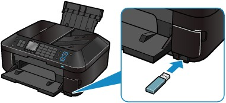

Inserting the USB Flash Drive
Inserting the USB Flash Drive Note NoteBefore inserting the USB flash drive
|
Insert the USB flash drive into the Direct Print Port.
Make sure that the USB flash drive is correctly oriented before inserting it straightforward into the Direct Print Port.

Removing the USB Flash DriveMake sure that the machine is not reading or writing data from/to the USB flash drive.
Check if the reading or writing operation is completed on the LCD.
 Important Important
|
| Note
|
Remove the USB flash drive.
Hold the USB flash drive and remove it straightforward from the machine.